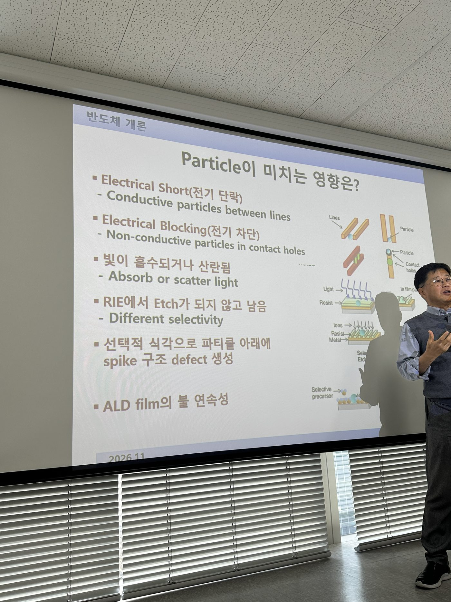
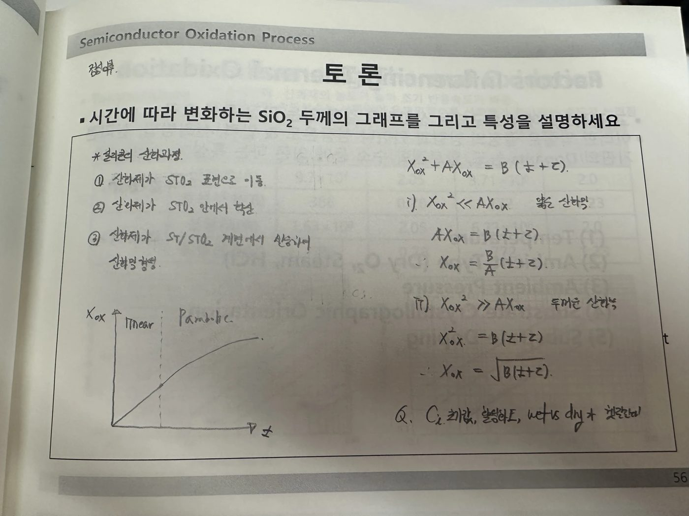
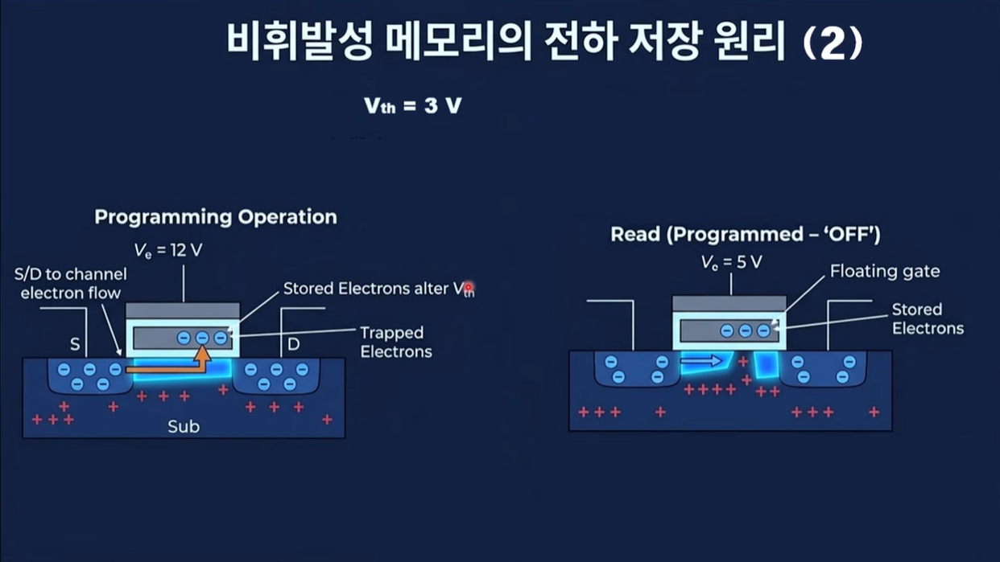
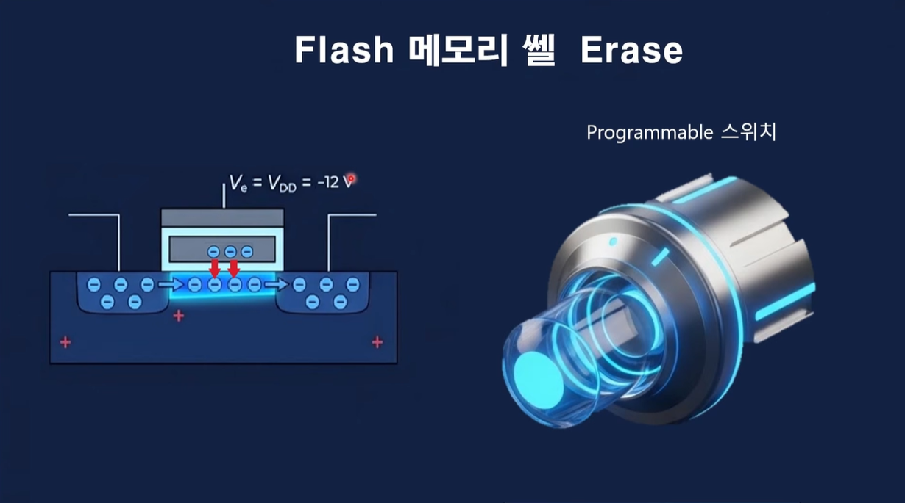

과제
1. 수업 과제: 반도체의 역사에 대해
흐름: 가장 큰 흐름은 Transistor → VLSI(집적회로) → SoC(System on Chip)
- VLSI는 Very Large Scale Integration으로 집적화로 인해서 칩에 트렌지스터 개수가 많아진 상태를 의미
- 여러 기능을 한 곳에 모아둔 것이 SoC(System on Chip) 이다. 여러 칩으로 나눠서 사용할 때보다 신호 전달 지연과 전력 소모를 줄일 수 있다.
(1) 1946년에 진공관을 사용하는 에니악이 공개되었습니다.
- 진공관은 열전자를 활용해서 스위치처럼 사용했습니다.
(2) 1947년에 벨 연구소에서 트랜지스터가 최초로 발명되었습니다.
- 이때는 게르마늄을 사용했습니다. 이땐 아직 실리콘을 사용할 수 있는 기술력이 안됐습니다. (+그리고 실리콘 산화막의 품질이 >> 게르마늄 산화막의 품질)
(3) 1958년에 TI에서 최초의 집적 회로인 Intergrated curcuit이 발명되었습니다.
- 게르마늄위에 트렌지스터, 커패시터, 저항(여러 소자들)을 함께 올려뒀습니다.
(4) 1968년 Intel이 설립되었고, 이후 DRAM과 CPU를 개발했습니다.
- 초반 인텔은 기술의 선두주자였습니다. 그래서 다른 회사들은 기술이 나오면 따라하는 느낌.
(5) 1983년에 삼성전자가 도쿄선언으로부터 DRAM 사업을 시작합니다.
- 이병철 회장님의 공격적인 투자로 DRAM 사업에 진출하게 됩니다.
(6) 1987년에는 모리스 창(Texas instrument 출신)에 의해 TSMC가 설립됩니다.
- TSMC는 파운더리 업체로 고객사의 신뢰를 바탕으로 칩 위탁 생산을 진행
- 파운더리 회사의 등장으로 여러 펩리스 회사들이 나올 수 있게 되었음
(7) 일본의 시장 점유율은 특히 90년대부터 점점 쇠약해지고 있었습니다.
- 일본의 DRAM 사업은 미국의 다양한 억압과 견제로 인해 점점 쇠퇴해져갔습니다.
- 일본의 회사 세 곳이 뭉쳐서 엘피다를 설립했지만 마이크론에 인수되었습니다.
- 하지만 여전히 소재, 부품, 장비 쪽은 일본이 높은 점유율을 차지하고 있습니다.
(8) 현재 메모리는 삼,하,마 가 꽉 잡고 있습니다. 파운더리는 TSMC가 고객의 신뢰와 구축된 생태계를 바탕으로 압도적인 1위를 달리고 있습니다.
- 일본정부는 2019년에 포토레지스트, 불화수소, 불화폴리이미드 등과 같은 소재에 규제를 걸었던 적이 있는데, 이게 오히려 소재의 국산화(자립화)를 가능하게 해줬다.
2. Particle이 미치는 영향은?
Q. Particle이 미치는 영향은?
<내 생각>
1. 일단 Particle이 무엇인지부터 정의를 해야할 것 같은데?
- 먼지, 사람, 부품, 공정 중에 떨어져 나오는 조각, Gas로부터 발생한 부산물의 “독립된 입자”를 의미
2. Particle이 붙게 되는 원리는 어떻게 되지?
- 반데르발스 인력, 정전기력, 화학적인 상호작용 등등
3. Particle이 어떤 공정 중에 문제를 발생하게 되지?
- 먼저 공정별로 나누어서 생각해볼 필요가 있을 것 같다.
(1) Photo 공정
- PR coating이 혜성형 무늬를 남기면서 제대로 coating이 안될 수 있다. → 패턴이 제대로 형성이 안됨 → 패턴이 잘못 찍혀서 회로도(?)에 문제가 생기면 Short나 open이 일어날 수 있다.
- 레티클에 실질적으로 Particle이 붙을 수 있을지는 모르겠지만, 붙게 된다면 그 입자가 빛을 방해하게 되고 원하지 않는 패턴이 print 될 것이다. 아마 펠리클에 의해 보호되더라도 초점이 흐려지게 되는 문제로 이어질 수 있다.
(2) Etch 공정
- Etch를 통해서는 식각을 진행할 때 Mask에서 떨어진 물질이 Etch 되어야 할 곳을 mask가 방해하게 되어버린다.
- Etch를 진행하고 나면 다양한 반응물과 부산물이 생길 것이다. Cleaning을 통해서 지우려고 하겠지만, 덜 지워지거나 남는 것들이 생길 수 있을 것이다.
- Etch에서도 식각이 진행할 때 유기물들이 생길 수 있고, 그 유기물은 후속 공정에 영향을 줄 수 있다.
- Particle이 남아있다면 전기적인 특성에 변화를 줄 것이다. (저항값이랄지..) 근데 그걸 공정 중에 파악할 수 있다면 좋은데 파악이 안된다면 문제를 안고 가는 것이겠지?
- 다음 step들을 거치면서 해당 문제가 누적이 되거나 뒤늦게 발견되면 open이나 short가 일어날 수 있다. 즉 접촉 불량이나 전류 누설이 생길 수 있을 것이다.
(3) Deposition 공정
- Particle이 존재하는 상태에서 증착이 되면 핀홀이나 보이드가 생기게 될 수 있습니다.
- Particle이 존재하는 상태에서 증착이 되면 그 부분이 떠버릴 것이다. 그러면 open이 될 수도 있을 것 같다.
- 이미 Particle에 의해 떠버린 상태에서 다음 공정을 계속 진행하다보면, Photo 공정에서 원하는 패턴 모양을 얻지 못해서 miss aligned 되고 이런 오차가 누적되면 곧 불량으로 이어질 것이다.
- 원하는 반응이 일어나야하는데 예상하지 못하는 반응이나, 반응에 방해가 될 수도 있을 듯함
(4) 금속 배선 공정
- Al 공정이나, W 이나, Cu나 각각의 공정을 하면서 particle이 생기거나 잔류하는 상황이 생길 수 있을 것 같다.
- 다만 금속 배선 공정에서는 아무래도 short나 open에 직접적으로 이어지기가 더 쉬울 것 같다. (사실 깊이 생각하고 싶은데, 아는게 없다.)
- CMP 공정을 진행하고 나서도 문제가 생길 수 있지 않을까 싶기도 하고? 결국 뭐 금속 배선에 손상이 가해지겠지.
(5) CMP 공정
- 잔류하는 particle이 스크래치를 내고 회로가 끊기게 될 수 있다.
4. 특정 공정을 떠나서 공통적으로 어떤 문제가 생기고 그 문제는 어떤 결과로 이어지지?
- Photo, Etch, Depo 공정을 진행하면서 Particle에 의해서 생길 수 있는 문제는 open(만나야 할 곳이 만나지 못하고 끊겨 있어 전류가 흐르지 못하는 것), short(만나지 않아야 할 곳이 만나서 전류가 과도하게 흐르는 것) 이 생길 수 있다. 그리고 목표한 패턴 CD나 식각 프로파일을 갖지 않을 수 있다. 증착에서는 두께 편차로 이어질 수 있다.
- 결국 이 모든 결함은 저항, 전류의 제어 문제로 이어지게 되고 칩에서 전기적 제어에 이상이 생기는 것은 곧 불량이거나 성능을 100% 낼 수 없는 칩이다.
(1) 기능 불량 관점
open이나 short가 존재한다면 신호가 전달이 안되면 의도한 동작을 수행할 수가 없다.
(2) 성능 저하 관점
기능을 할 수는 있지만 전류가 누설되거나 저항이 증가하면 속도가 느려지거나 낼 수 있는 파워를 내지 못할 것이다.
5. 그러면 제어 가능한 Particle을 어떻게 제어해야할까?
- 예방이 가능한 영역이면 예방을 할 것 같다. 그런데 예방을 할 수 없는 particle이 존재할 것이다. 그런 경우에는 검출을 통해서 문제가 발생한 상황이나, 조짐을 파악한다. 이미 생긴 것이 발견되었다면 공정을 되돌릴 수 있는 Photo 공정에서는 되돌릴 수도 있을 것 같다. 다른 공정이라면 보정을 할지, 아니면 성능이 떨어지는 칩으로 분류하고 계속해서 진행할지는 잘 모르겠다. 그리고 최종적으로 피드백을 통해서 이런 문제가 생기지 않도록, 혹은 생겼다면 어떻게 대처해야 할 지를 잘 기록해서 노하우로 만들어서 대응해야 하지 않을까?
정답 슬라이드

3. SiO₂ 성장은 Si/SiO₂ 계면에서 발생한다
Q. SiO₂ 성장은 Si/SiO₂ 계면에서 발생한다. 그 이유는 다음과 같습니다.
A.
1. Si wafer 표면에는 결합하지 못한 dangling bond가 있어 불안정합니다. 여기에 O₂, H₂O가 들어오면 반응해서 SiO₂가 형성됩니다.
2. 이렇게 SiO₂가 덮이고 나면 표면에는 더 반응할 Si가 없습니다. 대신 O₂, H₂O가 이 산화막 속을 확산해서 SiO₂/Si 계면까지 도달합니다.
3. 계면 아래에는 아직 산화되지 않은 Si가 있으므로, 도달한 산화제가 이 Si와 반응해 SiO₂를 만듭니다.
4. 따라서 SiO₂는 표면이 아니라 Si/SiO₂ 계면에서 성장하고, 이때 Si가 소모되면서 계면이 Si 안쪽으로 이동합니다.
4. 시간에 따라 변화하는 SiO₂ 두께의 그래프
Q. 시간에 따라 변화하는 SiO₂ 두께의 그래프를 그리고 특성을 설명하세요.
A.

5. 산화공정이란? 5분 발표 준비
전체 흐름: 산화막이 왜 필요한지 → 산화막 제작 방법 → 산화막 성장 방법 → 발전된 산화막 성장 방법
Q. 산화공정이란? 5분 발표 준비
A.
1. 안녕하세요 산화공정에 대해 설명드리겠습니다. 목차는 다음과 같습니다. 첫째 산화막이 왜 필요한지, 둘째 산화막 제작 방법, 셋째 산화막의 성장 방법 순으로 설명 드리겠습니다.
2. SiO₂는 1) 소자나 배선 간 절연을 시켜줍니다 2) 이온주입이나 확산 때 마스크의 역할을 합니다 3) 표면 보호를 합니다 4) 유전체로 커패시터 역할을 합니다.
3. 산화막을 만드는 방법에는 Oxidation 방법과 Deposition 방법이 있습니다. 열산화 방식은 Si와 SiO₂ 계면에서 Si가 직접 소모되며 산화막이 성장하게 됩니다. 또한 고온 공정이기 때문에 막이 치밀합니다. 반면 증착 방식은 원래 있던 표면에 증착이 됩니다. 상대적으로 낮은 온도에서 증착이 되고, 불순물이 존재하게 됩니다. 따라서 막의 퀄리티는 열산화 방법보다 좋지 않습니다.
4. 산화막 성장은 Deal-Grove 모델로 설명할 수 있습니다. 해당 모델은 Fick의 법칙을 기반으로 합니다. 기본적으로 농도가 높은 곳에서 낮은 곳으로 확산합니다. 즉 농도구배 현상이 일어납니다. 또한 정상 상태를 가정합니다. 산화제인 O₂나 H₂O는 세 단계를 거치게 됩니다. 가장 먼저 산화막 표면으로 이동하게 됩니다. 그 다음 산화막 내부를 확산하게 됩니다. 그 다음 Si-SiO₂ 계면에서 Si와 반응하여 SiO₂가 만들어집니다.
5. 이제 시간에 따라 두 구간으로 나누겠습니다. 초반에는 산화막이 매우 얇습니다. 따라서 산화제가 산화막을 확산해 들어가는 시간이 짧습니다. 따라서 시간에 따라 산화막의 두께가 선형적으로 증가하게 됩니다. 이 때 반응 속도는 결정면이나 도핑 농도에 영향을 받게 됩니다. 예를 들면 (111)면은 Si 원자 밀도가 높아 더 빠르게 성장합니다.
6. 시간이 지나면 산화막이 두꺼워집니다. 산화제는 두꺼워진 산화막을 확산해서 들어가야합니다. 이제는 확산해서 들어가는 시간이 전체 속도를 결정합니다. 이 때 시간에 따라 산화막의 두께는 포물선을 그리며 증가하고, 성장 속도는 점점 느려지게 됩니다. 온도가 높아지게 된다면 확산과 반응 속도가 모두 지수적으로 증가해서 빨라지게 됩니다. 최종적으로 산화막이 얇을 때는 계면에서 반응속도가 결정하며 선형 그래프를 그립니다. 두꺼워지면 확산이 전체 산화막 성장 속도를 결정하며 포물선 그래프를 그리게 됩니다.
7. 이렇듯 Dry, Wet Oxidation에 대해 살펴봤는데요. 이후에는 Radical Oxidation 방법이 등장했습니다. Radical Oxidation 방법은 웨이퍼 자체를 뜨겁게 만들고, 산소 라디칼을 발생시킵니다. 그 다음 방식으로는 Plasma Oxidation 방법이 등장했습니다. 양산 단에서는 상대적으로 저온에서 사용할 수 있는 Plasma Oxidation 방법도 많이 사용합니다.
8. 그리고 가열로의 생김새는 공간을 덜 차지하도록 높은 층고를 활용한 수직 가열로를 사용합니다. 웨이퍼를 한 장씩 빠르게 가열하는 RTP 방식도 사용합니다. 이렇게 공정의 목적에 따라 장비와 방식을 선택해서 사용합니다. 이상입니다.
6. 조별과제: FLASH MEMORY의 동작원리(Program/Erase)
- 5분 발표, 페널티 4:30~5:30 안에 들어와야함. 못들어오면 발표 한 사람이 더하기
- 원고 X, 판서 X

- 방향성 정하기
- 각자 조사해서 합치고 presentation 어떻게 할지 합치기
주제: FLASH MEMORY의 동작원리(Program/Erase)를 설명하시오.
1. 개요
- 반도체를 수행하는 기능에 따라 메모리 반도체와 비메모리 반도체로 나눌 수 있습니다.
- 그 중에서도 메모리 반도체에는 휘발성 메모리와 비휘발성 메모리가 있습니다.
- 휘발성 메모리에는 전원이 꺼지면 데이터가 사라지는 DRAM과 비휘발성 메모리에는 전원이 꺼져도 데이터가 유지되는 FLASH 메모리가 있습니다.
- FLASH 메모리는 다시 NAND와 NOR로 나뉘는데, 이 중 현재 가장 널리 사용되는 NAND FLASH를 중심으로 설명드리겠습니다.
- NAND Flash는 NOR Flash와 셀이 연결되는 방식에서 가장 큰 차이가 있습니다. NAND는 셀이 직렬도 연결되어 있고, 그에 따라 같은 면적에도 더 많은 셀을 넣어 집적도가 높고 가격이 저렴합니다.
- Bit line, Word line
- Gate에 인가하는 것은 Word line을 통해서 인가한다.
2. 구조

- 가장 아래 기판은 P-type 실리콘 반도체입니다. Source Drain은 각각 N type으로 도핑되어 있습니다.
- Si wafer 층 위에는 Tunnel oxide가 있고, 그 위에 floating gate가 존재합니다. 그 위에 다시 Tunnel oxide가 존재하고, Control gate가 존재합니다. 그리고 나서 다시 Tunnel oxide가 존재합니다.
근데!! 위의 그림이 조금 부정확한 것 같음!

- 다시 구조를 정리해보자면
기판 / Tunneling Oxide / Floating gate / Blocking Oxide / Control Gate
3. 동작원리

[1] Erase 된 상태
- Program이 되지 않은 상태를 Erase 된 상태라고 합니ㄱ다. (기본 상태) Erase 상태에서는 Floating Gate에 전자가 존재하지 않습니다.
- 문턱 전압이 3V 인 경우를 따져봅시다.
(1) Gate에 0V를 가해줬으니 Channel이 형성되지 않습니다.
(2) Gate에 5V 가해주게 되면 문턱전압을 넘어 Channel이 형성되게 됩니다.
- 이렇게 Channel이 형성되면 Cell 자체는 ON 상태가 됩니다.

[2] Program 된 상태
(1) Gate에 12V를 가해주게 되면 Channel에 있는 전자들이 양의 전압이 강하게 걸린 Control gate 쪽으로 가려고 합니다. 이때 Tunneling oxide가 막고 있다. 하지만 12V 정도 되는 강한 전압이 걸리게 되면 Channel에 전자들이 Floating Gate로 들어오게 됩니다. (양자 터널링 효과)
이때 Floating Gate는 어디에도 연결되지 않은 상태이기 때문에 부유한채로 갇혀서 존재하게됩니다.
→ 이걸 바로 Program 된 상태라고 합니다.
(2) Gate에서 5V가 다시 가해지게 된 상태라고 합시다. 이때는 이전과 다르게 Floating gate에 전자들이 존재하고 있습니다. 따라서 Erase된 상태와 다르게 Program 된 상태에서는 채널이 끊기게 됩니다. (아마도 척력) 따라서 channel 이 끊겼기 때문에 OFF 상태가 됩니다.
이때 이렇게 Floating gate에 전자가 갇히게 되고, 전원을 끄게 되더라도 여전히 Floating gate에 존재하기 때문에 Cell의 특성이 그대로 유지되게 된다. 그래서 “비”휘발성 메모리이다.

[3] Erase 하고 싶다면
Gate에 - 12V를 가해주게 되면 Floating Gate에 존재하는 전자들이 빠져나가고 기존의 MOSFET의 형태가 됩니다.
그래서 이후에 다음에 다시 5V를 걸어주면 정상적인 MOSFET 동작을 하게 된다.
대본 (Flash 메모리의 Erase, program에 대해서 설명드리겠습니다.)
대본 · 1. 개요
- 반도체를 수행하는 기능에 따라 메모리 반도체와 비메모리 반도체로 나눌 수 있습니다.
- 그 중에서도 메모리 반도체에는 휘발성 메모리와 비휘발성 메모리가 있습니다.
- 휘발성 메모리에는 대표적으로 전원이 꺼지면 데이터가 사라지는 DRAM이 있고, 비휘발성 메모리에는 전원이 꺼져도 데이터가 유지되는 FLASH 메모리가 있습니다.
- 이 FLASH 메모리는 다시 NAND와 NOR로 나뉘는데, NOR과 NAND중 program과 erase 속도가 빠르며 직렬로 연결되어 수직 적층이 가능하여 높은 집적도의 구조를 형성하기 용이한 NAND FLASH가 주로 사용되며, 이에 따라 NAND FLASH를 위주로 설명드리겠습니다. 는 PROGRAM & ERASE 속도 차이가 있어 주로 NAND가 사용됩니다.(NAND read 느리고 program&erase 빠름)현재 가장 널리 사용되는 NAND FLASH를 중심으로 설명드리겠습니다.
- 이때 NAND Flash는 직렬연결이 되어있어 Program과 Erase 속도가 빠릅니다. 그리고 집적화가 가능합니다.
대본 · 2. 구조
- Word line과 Bit line을 통해, program과 erase를 진행하게 되는데요.
- 컨트롤 게이트 Word line과 연결되고, Bit line을 통해 Cell 간 직렬 연결이 됩니다.
- 지금부터 구조에 대해서 설명 드리겠습니다. P-type 기판을 기준으로 n-channel을 형성하는 NAND Flash 구조를 통해서 설명드리겠습니다. P-type위에는 Tunneling oxide 그리고 플로팅 게이트 그리고 Control gate가 존재합니다.
대본 · 3. 동작원리
(1) Erase 상태
먼저 Erase 된 상태에 대해 설명드리겠습니다. Erase 된 상태에서는 Floating gate에 전자가 존재하지 않습니다. 문턱 전압이 3V인 경우를 생각해봅시다. Gate에 0V가 가해진다면, Channel이 형성되지 않습니다. 이 때 Gate에 5V 가해주게 되면 문턱 전압을 넘어 n-Channel을 형성하게 됩니다.
(2) Program 상태
이제 Program 된 상태에 대해서 살펴보겠습니다. Gate 12V를 가해주는 상황을 생각해봅시다. 강하게 전압이 걸리게 때문에 Channel에 있는 전자들이 Control gate 쪽으로 가려고 합니다. 이 때 Tunneling oxide가 막고 있는데요, 강한 전압에 의해 Channeling 현상이 일어나게 됩니다. Chanelling 현상은 영자역학적으로 전위 장벽이 충분히 얇거나 벽이 충분히 얇은 경우 전자가 벽을 뚫고 넘어가는 양자 터널링 현상이 발생할 수 있습니다. 따라서 전자는 절연체를 통과해 Floating gate로 전자가 들어가게 됩니다. 이 때 Floating Gate에 전자가 갇힌 상태를 Program 된 상태라고 합니다.
Gate에 5V가 다시 가해지게 된 상태라고 합시다. 이 때는 이전과 다르게 Floating Gate에 전자들이 존재하고 있습니다. 따라서 Erase된 상태와 달리 동일한 5V가 가해지는 상황임에도 Program 된 상태에서는 Floating gate 안에 전자가 존재하며 이로 인해 척력이 발생해 전자들을 밀어내게 됩니다. 따라서 채널이 끊기게 됩니다. 따라서 Cell 자체는 off 상태가 됩니다.
(3) Program 상태에서 Erase 상태로 만드는 상황을 설명하겠습니다.
Floating gate에 전자가 갇힌 상태에서 Erase하여 전자를 제거하고 싶다면 -12V (강한 전압차)를 Control gate 가하여 Floating Gate에 존재하는 전자들이 빠져나가게 됩니다. 다시 Erase된 상태가 됩니다. 그러고 나서 다시 5V 가해준다면 정상적인 채널을 형성하게 됩니다.
*터널링 현상
하전입자는 고전적으로 전위 장벽이 존재 시 반대쪽으로 이동이 불가능하나, 양자역학적으로 전위 장벽이 충분히 낮거나 얇을 경우 반대로 넘어갈 수도 있다.
일정한 높이의 전위 장벽이 있을 때, 한쪽의 전위를 높여주면 일정한 높이에서 경사가 발생하고, 따라서 비스듬해진 전위 장벽으로 인해 장벽 너비가 짧아져 터널링 발생 확률이 올라가게 된다.
위와 같은 원리로 소재와 구조적 특성을 조절하여 셀을 적절히 구성한 뒤, 인가 전압을 적당히 조절하며 터널링을 양방향으로 발생시킬 수 있으며, 전압을 조절해서 가둔 전자가 이동하지 않도록 전위 장벽 사이에 가둘 수 있다.